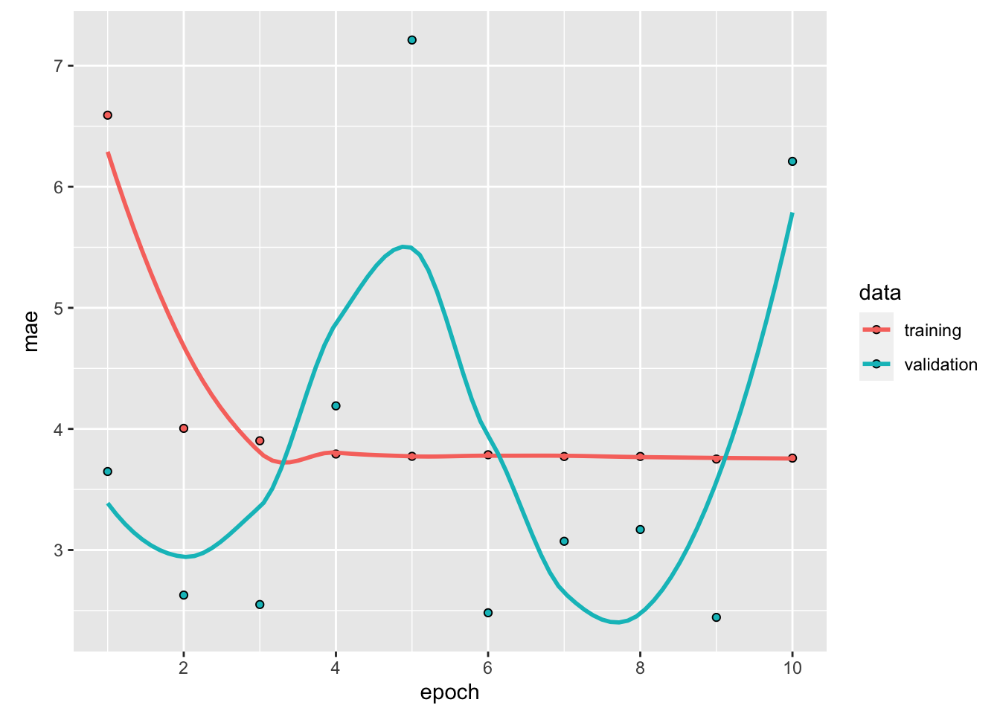
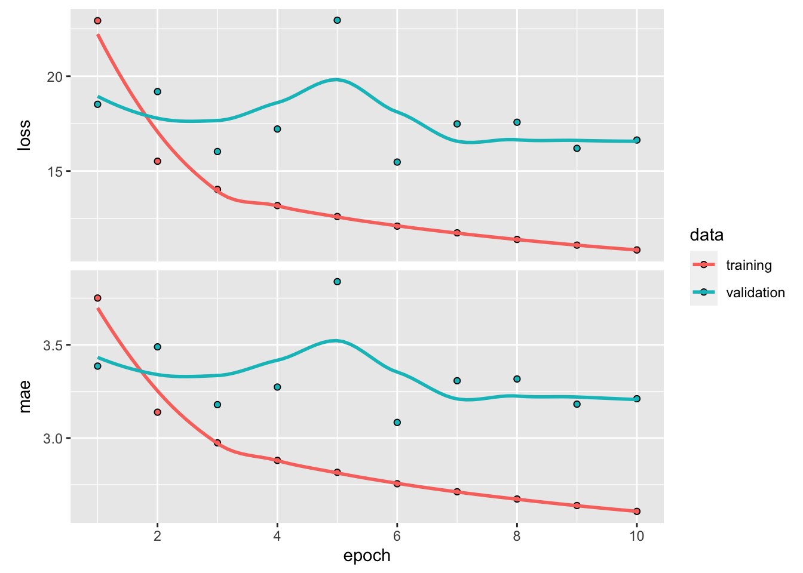
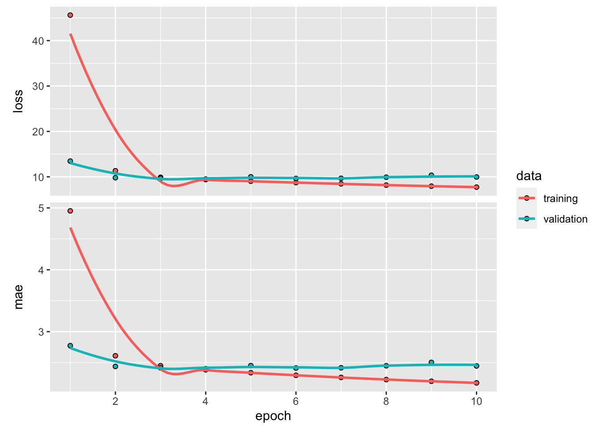
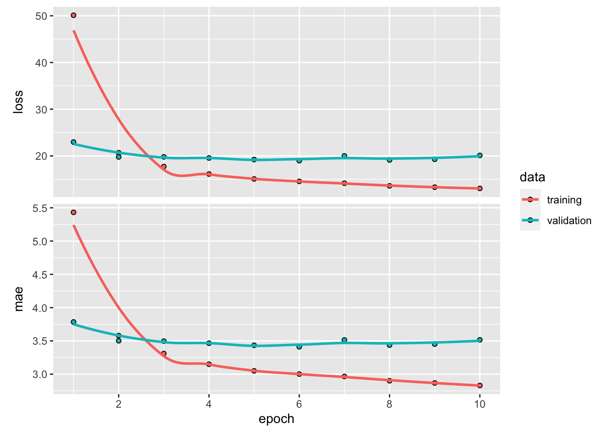
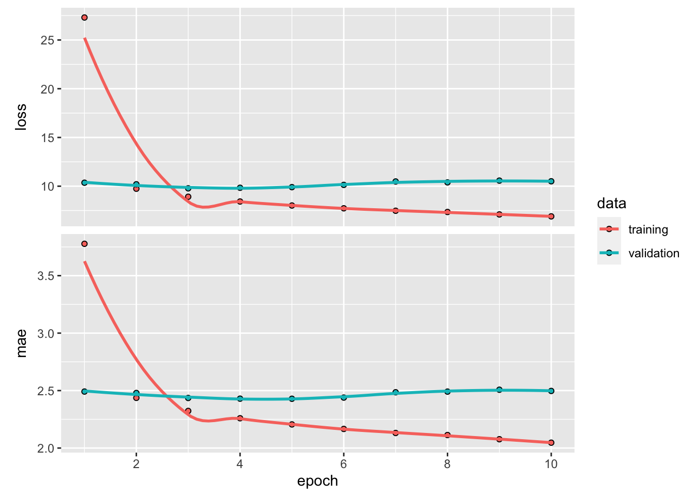

5 DNN dla danych sekwencyjnych
5.1 Rodzaje szeregów czasowych
Szereg czasowy może być dowolnym zestawem danych uzyskanym poprzez pomiary w regularnych odstępach czasu, jak np. dzienna cena akcji, godzinowe zużycie energii elektrycznej w mieście lub tygodniowa sprzedaż w sklepie. Szeregi czasowe są obecne wszędzie, niezależnie od tego, czy patrzymy na zjawiska naturalne (takie jak aktywność sejsmiczna, ewolucja populacji ryb w rzece czy pogoda w danym miejscu), czy na wzorce aktywności ludzkiej (takie jak odwiedzający stronę internetową, PKB kraju czy transakcje kartami kredytowymi). W przeciwieństwie do typów danych, z którymi mieliśmy do tej pory do czynienia, praca z szeregami czasowymi wymaga zrozumienia dynamiki systemu - jego cykli okresowych, trendów w czasie, regularnego reżimu i nagłych skoków.
Zdecydowanie najbardziej powszechnym zadaniem związanym z szeregami czasowymi jest prognozowanie: przewidywanie, co stanie się w następnej serii; prognozowanie zużycia energii elektrycznej z kilkugodzinnym wyprzedzeniem, aby można było przewidzieć popyt; prognozowanie przychodów z kilkumiesięcznym wyprzedzeniem, aby można było zaplanować budżet; prognozowanie pogody z kilkudniowym wyprzedzeniem, aby można było zaplanować wyjazd. Prognozowanie jest tym, na czym skupia się ten rozdział. Ale w rzeczywistości istnieje wiele innych rzeczy, które można zrobić z szeregami czasowymi:
- klasyfikacja - przypisanie jednej lub więcej etykiet kategorycznych do szeregu czasowego. Na przykład, biorąc pod uwagę szereg czasowy aktywności osoby odwiedzającej stronę internetową, należy sklasyfikować, czy osoba ta jest botem czy człowiekiem.
- wykrywanie zdarzeń - identyfikacja wystąpienia określonego, oczekiwanego zdarzenia w ciągłym strumieniu danych. Szczególnie użytecznym zastosowaniem jest “wykrywanie słów kluczy”, gdzie model monitoruje strumień audio i wykrywa wypowiedzi takie jak “OK, Google” lub “Hej, Alexa”.
- wykrywanie anomalii - wykrywanie wszelkich nietypowych zdarzeń w ciągłym strumieniu danych. Nietypowa aktywność w sieci firmowej, które może być rozpoznane jako atak. Nietypowe odczyty na linii produkcyjnej, po to, aby człowiek się temu przyjrzał. Wykrywanie anomalii odbywa się zazwyczaj poprzez uczenie bez nadzoru, ponieważ często nie wiadomo, jakiego rodzaju anomalii się szuka, więc nie można trenować na konkretnych przykładach anomalii.
Podczas pracy z szeregami czasowymi, spotkamy się z szeroką gamą technik reprezentacji danych specyficznych dla danej dziedziny. Na przykład, transformata Fouriera, która polega na wyrażeniu serii wartości w kategoriach superpozycji fal o różnych częstotliwościach. Transformata Fouriera może być bardzo cenna podczas wstępnego przetwarzania wszelkich danych, które charakteryzują się przede wszystkim cyklami i oscylacjami (jak dźwięk, drgania ramy wieżowca czy fale mózgowe). W kontekście głębokiego uczenia, analiza Fouriera (lub powiązana analiza częstotliwości Mel) i inne reprezentacje specyficzne dla danej domeny mogą być przydatne jako forma inżynierii cech, sposób na przygotowanie danych przed trenowaniem modelu na nich, aby ułatwić pracę modelu.
Możemy wyróżnić trzy rodzaje zadań z wykorzystaniem szeregów czasowych:
- jednowymiarowe szeregi czasowe (ang. univariate time series) - problem sekwencyjny, w którym na podstawie historycznych wartości szeregu czasowego przewidujemy przyszłe wartości. Przykładowo na podstawie temperatur z kilku poprzednich dni, chcemy przewidywać temperaturę jutrzejszą.
- wielowymiarowe szeregi czasowe (ang. multivariate time series) - problem sekwencyjny, w którym na podstawie historycznych wartości kilku zmiennych (w tym historycznych danych na temat zmiennej wyjściowej) przewidujemy przyszłe wartości pewnej zmiennej wyjściowej. Przykładowo jeśli chcemy przewidywać zanieczyszczenie powietrza1 na podstawie wcześniejszych odczytów zanieczyszczenia oraz wcześniejszych informacji o sile i kierunku wiatru, temperaturze, punkcie rosy itp.
- wieloetapowe szeregi czasowe (ang. multistage time series) - problem sekwencyjny, w którym na postawie historycznych wartości szeregu czasowego przewidujemy kilka (więcej niż jedną) wartość przyszłą tego szeregu czasowego. Przykładowo jeśli na podstawie historycznych wielkości opadów chcemy przewidzieć wielkość opadów w najbliższych trzech dniach.
1 wyrażone w jednostkach pm2.5
Oprócz wspomnianego podziału rodzajów zadań z wykorzystaniem szeregów czasowych, możemy je również podzielić na typy zadań ze względu na postać wejść i wyjść z modelu sieci neuronowej:
- jeden do jednego - gdy istnieje jedno wejście i jedno wyjście. Typowym przykładem problemu sekwencji jeden do jednego jest przypadek, gdy mamy obraz i chcemy przewidzieć jedną etykietę dla tego obrazu.
- wiele do jednego - problemach sekwencyjnych wiele do jednego, mamy sekwencję danych jako wejście i musimy przewidzieć pojedyncze wyjście. Klasyfikacja tekstu jest doskonałym przykładem problemów sekwencji many-to-one, gdzie mamy sekwencję wejściową słów i chcemy przewidzieć pojedynczy tag wyjściowy.
- jeden do wielu - w problemach sekwencji jeden do wielu, mamy pojedyncze wejście i sekwencję wyjść. Typowym przykładem jest obraz i odpowiadający mu opis sceny.
- wiele do wielu - problemy sekwencji wiele do wielu obejmują sekwencję wejść i sekwencję wyjść. Na przykład, ceny akcji z 7 dni jako dane wejściowe i ceny akcji z kolejnych 7 dni jako dane wyjściowe. Chatboty są również przykładem problemów sekwencji wiele do wielu, gdzie sekwencja tekstowa jest wejściem, a inna sekwencja tekstowa jest wyjściem.

5.2 Zastosowanie sieci rekurencyjnych w szeregach czasowych
W tym podrozdziale omówimy trzy zaawansowane techniki poprawy wydajności i siły generalizacji rekurencyjnych sieci neuronowych. Zademonstrujemy wszystkie trzy koncepcje na problemie prognozowania pogody, gdzie mamy dostęp do szeregu obserwacji pochodzących z czujników zainstalowanych na dachu budynku, takich jak temperatura, ciśnienie powietrza i wilgotność, które użyjemy do przewidywania, jaka będzie temperatura 24 godziny po ostatniej obserwacji w bazie danych. Jest to dość trudny problem, który ilustruje wiele typowych trudności napotykanych podczas pracy z szeregami czasowymi.
Omówimy następujące techniki:
- Recurrent dropout - to specyficzny, wbudowany sposób użycia dropoutu do walki z nadmiernym dopasowaniem w warstwach rekurencyjnych.
- Składanie warstw rekurencyjnych - zwiększa to moc reprezentacyjną sieci (kosztem większego obciążenia obliczeniowego).
- Dwukierunkowe warstwy rekurencyjne - prezentują one tę samą informację sieci rekurencyjnej na różne sposoby, zwiększając dokładność i łagodząc problemy związane z zapominaniem.
Przykład 5.1 W analizowanym zestawie danych 14 różnych wielkości (takich jak temperatura powietrza, ciśnienie atmosferyczne, wilgotność, kierunek wiatru i tak dalej) było rejestrowanych co 10 minut, przez kilka lat. Oryginalne dane sięgają 2003 roku, ale ten przykład jest ograniczony do danych z lat 2009-2016.
Na początek pobierzemy dane z serwera https://s3.amazonaws.com/keras-datasets/jena_climate_2009_2016.csv.zip i rozpakujemy.
Kod
url <-
"https://s3.amazonaws.com/keras-datasets/jena_climate_2009_2016.csv.zip"
download.file(url, destfile = basename(url))
zip::unzip(zipfile = "jena_climate_2009_2016.csv.zip",
files = "jena_climate_2009_2016.csv")Kod
full_df <- readr::read_csv("jena_climate_2009_2016.csv")
full_df# A tibble: 420,451 × 15
`Date Time` `p (mbar)` `T (degC)` `Tpot (K)` `Tdew (degC)` `rh (%)`
<chr> <dbl> <dbl> <dbl> <dbl> <dbl>
1 01.01.2009 00:10:00 997. -8.02 265. -8.9 93.3
2 01.01.2009 00:20:00 997. -8.41 265. -9.28 93.4
3 01.01.2009 00:30:00 997. -8.51 265. -9.31 93.9
4 01.01.2009 00:40:00 997. -8.31 265. -9.07 94.2
5 01.01.2009 00:50:00 997. -8.27 265. -9.04 94.1
6 01.01.2009 01:00:00 996. -8.05 265. -8.78 94.4
7 01.01.2009 01:10:00 996. -7.62 266. -8.3 94.8
8 01.01.2009 01:20:00 996. -7.62 266. -8.36 94.4
9 01.01.2009 01:30:00 996. -7.91 266. -8.73 93.8
10 01.01.2009 01:40:00 997. -8.43 265. -9.34 93.1
# ℹ 420,441 more rows
# ℹ 9 more variables: `VPmax (mbar)` <dbl>, `VPact (mbar)` <dbl>,
# `VPdef (mbar)` <dbl>, `sh (g/kg)` <dbl>, `H2OC (mmol/mol)` <dbl>,
# `rho (g/m**3)` <dbl>, `wv (m/s)` <dbl>, `max. wv (m/s)` <dbl>,
# `wd (deg)` <dbl>Choć nie jest to konieczne w tym zadaniu, to przekształcimy datę (będącą pierwsza kolumną w zestawie danych) z typu character do typu DateTime.
Kod
full_df$`Date Time` %<>%
as.POSIXct(tz = "Etc/GMT+1", format = "%d.%m.%Y %H:%M:%S")Zwróć uwagę, że przekazujemy tz = "Etc/GMT+1" zamiast tz = "Europe/Berlin", ponieważ znaczniki czasu w zbiorze danych nie dostosowują się do czasu letniego środkowoeuropejskiego (znanego również jako czas letni), ale zawsze są według czasu środkowoeuropejskiego.
Powyżej po raz pierwszy użyliśmy potoku przypisania x %<>% fn(), który jest skrótem od x <- x %>% fn(). Jest to przydatne, ponieważ pozwala pisać bardziej czytelny kod i uniknąć wielokrotnego powtarzania tej samej nazwy zmiennej. Przypisanie jest udostępniane przez wywołanie library(keras).
Kod
plot(`T (degC)` ~ `Date Time`, data = full_df, pch = 20, cex = .3)Rysunek 5.1 przedstawia wykres temperatury (w stopniach Celsjusza) w czasie. Na tym wykresie wyraźnie widać roczną okresowość temperatury - dane obejmują 8 lat.
Kod
plot(`T (degC)` ~ `Date Time`, data = full_df[1:1440, ], type = 'l')Rysunek 5.2 przedstawia węższy wykres danych temperatury z pierwszych 10 dni. Ponieważ dane są rejestrowane co 10 minut, otrzymujemy 24 × 6 = 144 punkty danych dziennie. Zauważ też, że ten 10-dniowy okres musi pochodzić z dość zimnego zimowego miesiąca. Gdybyś próbował przewidzieć średnią temperaturę na następny miesiąc biorąc pod uwagę kilka miesięcy danych z przeszłości, problem byłby łatwy, ze względu na okresowość danych w skali roku. Ale patrząc na dane w skali dni, temperatura wygląda o wiele bardziej chaotycznie. Czy ten szereg czasowy jest przewidywalny w skali dziennej? Przekonajmy się.
We wszystkich naszych eksperymentach wykorzystamy pierwsze 50% danych do szkolenia, kolejne 25% do walidacji, a ostatnie 25% do testowania. Podczas pracy z danymi szeregów czasowych ważne jest, aby używać danych walidacyjnych i testowych, które są nowsze niż dane treningowe, ponieważ próbujemy przewidzieć przyszłość na podstawie przeszłości, a nie odwrotnie, a podziały walidacyjne / testowe powinny to odzwierciedlać.
Kod
num_train_samples <- round(nrow(full_df) * .5)
num_val_samples <- round(nrow(full_df) * 0.25)
num_test_samples <- nrow(full_df) - num_train_samples - num_val_samples
train_df <- full_df[seq(num_train_samples), ]
val_df <- full_df[seq(from = nrow(train_df) + 1,
length.out = num_val_samples), ]
test_df <- full_df[seq(to = nrow(full_df),
length.out = num_test_samples), ]
cat("num_train_samples:", nrow(train_df), "\n")num_train_samples: 210226 num_val_samples: 105113 num_test_samples: 105112 Dokładne sformułowanie problemu będzie następujące: biorąc pod uwagę dane obejmujące poprzednie pięć dni i próbkowane raz na godzinę, czy możemy przewidzieć temperaturę w ciągu 24 godzin?
Po pierwsze, wstępnie przetworzymy dane do formatu, który może przyjąć sieć neuronowa. Dane są już numeryczne, więc nie trzeba ich wektoryzować. Jednak każdy szereg czasowy w danych ma inną skalę (np. ciśnienie atmosferyczne, mierzone w mbar, wynosi około 1000, podczas gdy H2OC, mierzone w milimolach na mol, wynosi około 3). Znormalizujemy każdą serię czasową (kolumnę) niezależnie, tak aby wszystkie przyjmowały małe wartości w podobnej skali. Użyjemy pierwszych 210 226 kroków czasowych jako danych treningowych, więc obliczymy średnią i odchylenie standardowe tylko dla tej części danych.
Kod
List of 14
$ p (mbar) :List of 2
..$ mean: num 989
..$ sd : num 8.51
$ T (degC) :List of 2
..$ mean: num 8.83
..$ sd : num 8.77
$ Tpot (K) :List of 2
..$ mean: num 283
..$ sd : num 8.87
$ Tdew (degC) :List of 2
..$ mean: num 4.31
..$ sd : num 7.08
$ rh (%) :List of 2
..$ mean: num 75.9
..$ sd : num 16.6
$ VPmax (mbar) :List of 2
..$ mean: num 13.1
..$ sd : num 7.6
$ VPact (mbar) :List of 2
..$ mean: num 9.19
..$ sd : num 4.15
$ VPdef (mbar) :List of 2
..$ mean: num 3.95
..$ sd : num 4.77
$ sh (g/kg) :List of 2
..$ mean: num 5.81
..$ sd : num 2.63
$ H2OC (mmol/mol):List of 2
..$ mean: num 9.3
..$ sd : num 4.2
$ rho (g/m**3) :List of 2
..$ mean: num 1218
..$ sd : num 42
$ wv (m/s) :List of 2
..$ mean: num 2.15
..$ sd : num 1.53
$ max. wv (m/s) :List of 2
..$ mean: num 3.56
..$ sd : num 2.32
$ wd (deg) :List of 2
..$ mean: num 176
..$ sd : num 85.9Następnie stwórzmy obiekt TF Dataset, który zawiera partie danych z ostatnich pięciu dni wraz z temperaturą docelową 24 godziny w przyszłości. Ponieważ próbki w zestawie danych są wysoce nadmiarowe (próbka N i próbka N + 1 będą miały większość wspólnych kroków czasowych), marnotrawstwem byłoby jawne przydzielanie pamięci dla każdej próbki. Zamiast tego będziemy generować próbki w locie, zachowując w pamięci tylko oryginalne tablice danych i nic więcej.
Moglibyśmy z łatwością napisać funkcję w R, aby to zrobić, ale istnieje wbudowane narzędzie w keras, które właśnie to robi - (timeseries_dataset_from_array()) - więc możemy zaoszczędzić sobie trochę pracy, korzystając z niego. Ogólnie rzecz biorąc, można go używać do wszelkiego rodzaju zadań związanych z prognozowaniem szeregów czasowych.
Aby zrozumieć działanie funkcji timeseries_dataset_from_array(), przyjrzyjmy się prostemu przykładowi. Ogólna idea polega na dostarczeniu tablicy danych szeregów czasowych (argument dane), a funkcja timeseries_dataset_from_array() daje okna wyodrębnione z oryginalnych szeregów czasowych (nazwiemy je “sekwencjami”).
Na przykład, jeśli użyjesz data = [0 1 2 3 4 5 6] i sequence_length = 3, wówczas timeseries_dataset_from_array() wygeneruje następujące próbki: [0 1 2], [1 2 3] , [2 3 4], [3 4 5], [4 5 6].
Do funkcji timeseries_dataset_ from_array() można również przekazać argument targets (tablicę). Pierwszy wpis w tablicy targets powinien odpowiadać pożądanemu celowi dla pierwszej sekwencji, która zostanie wygenerowana z tablicy data. Tak więc, jeśli wykonujemy prognozowanie szeregów czasowych, targets powinny być tą samą tablicą co data, przesuniętą o pewną wartość.
Na przykład, z data = [0 1 2 3 4 5 6 ...] i sequence_length = 3, można utworzyć zestaw danych do przewidywania następnego kroku w serii, przekazując targets = [3 4 5 6 ...]. Przykładowo:
Kod
int_sequence <- seq(10)
dummy_dataset <- timeseries_dataset_from_array(
data = head(int_sequence, -3),
targets = tail(int_sequence, -3),
sequence_length = 3,
batch_size = 2
)
library(tfdatasets)
dummy_dataset_iterator <- as_array_iterator(dummy_dataset)
repeat {
batch <- iter_next(dummy_dataset_iterator)
if (is.null(batch))
break
c(inputs, targets) %<-% batch
for (r in 1:nrow(inputs))
cat(sprintf("input: [ %s ] target: %s\n",
paste(inputs[r, ], collapse = " "), targets[r]))
cat(strrep("-", 27), "\n")
}input: [ 1 2 3 ] target: 4
input: [ 2 3 4 ] target: 5
---------------------------
input: [ 3 4 5 ] target: 6
input: [ 4 5 6 ] target: 7
---------------------------
input: [ 5 6 7 ] target: 8
--------------------------- Użyjemy funkcji timeseries_dataset_from_array(), aby utworzyć trzy zestawy danych: jeden do szkolenia, jeden do walidacji i jeden do testowania. Użyjemy następujących wartości parametrów:
-
sampling_rate = 6- obserwacje będą próbkowane z częstotliwością jednego punktu danych na godzinę (zachowamy tylko jeden punkt danych z 6). -
sequence_length = 120- obserwacje będą sięgać pięciu dni wstecz (120 godzin). -
delay = sampling_rate * (sequence_length + 24 - 1)- celem dla sekwencji będzie temperatura 24 godziny po zakończeniu sekwencji.
Kod
sampling_rate <- 6
sequence_length <- 120
delay <- sampling_rate * (sequence_length + 24 - 1)
batch_size <- 256
df_to_inputs_and_targets <- function(df) {
inputs <- df[input_data_colnames] %>%
normalize_input_data() %>%
as.matrix()
targets <- as.array(df$`T (degC)`)
list(
head(inputs, -delay),
tail(targets, -delay)
)
}
make_dataset <- function(df) {
c(inputs, targets) %<-% df_to_inputs_and_targets(df)
timeseries_dataset_from_array(
inputs, targets,
sampling_rate = sampling_rate,
sequence_length = sequence_length,
shuffle = TRUE,
batch_size = batch_size
)
}
train_dataset <- make_dataset(train_df)
val_dataset <- make_dataset(val_df)
test_dataset <- make_dataset(test_df)Każdy zestaw danych daje partie jako parę (samples, targets), gdzie samples to partia 256 próbek, z których każda zawiera 120 kolejnych godzin danych wejściowych, a targets to odpowiednia tablica 256 temperatur docelowych. Należy pamiętać, że próbki są losowo tasowane, więc dwie kolejne sekwencje w partii (takie jak sample[1, ] i sample[2, ]) niekoniecznie są czasowo blisko siebie.
Zanim zaczniemy wykorzystywać modele uczenia głębokiego typu black-box w rozwiązywaniu problemu przewidywania temperatury, wypróbujmy proste, zdroworozsądkowe podejście. Posłuży ono jako sprawdzian poprawności i ustanowi punkt odniesienia, który będziemy musieli pokonać, aby zademonstrować przydatność bardziej zaawansowanych modeli uczenia maszynowego. Takie zdroworozsądkowe podstawy mogą być przydatne, gdy zabieramy się do nowego problemu, dla którego nie ma (jeszcze) znanego rozwiązania. Klasycznym przykładem są niezrównoważone zadania klasyfikacyjne, w których niektóre klasy występują znacznie częściej niż inne. Jeśli zbiór danych zawiera 90% przypadków klasy A i 10% przypadków klasy B, wówczas zdroworozsądkowym podejściem do zadania klasyfikacji jest zawsze przewidywanie “A”, gdy prezentowana jest nowa próbka. Taki klasyfikator jest ogólnie dokładny w 90%, a zatem każde podejście oparte na uczeniu powinno pokonać ten 90% wynik, aby wykazać przydatność. Czasami takie elementarne wartości bazowe mogą okazać się zaskakująco trudne do pokonania.
5.2.1 Model bazowy
W tym przypadku można bezpiecznie założyć, że szereg czasowy temperatury jest ciągły (temperatury jutro będą prawdopodobnie zbliżone do temperatur dzisiaj), a także okresowy z okresem dziennym. Dlatego zdroworozsądkowym podejściem jest zawsze przewidywanie, że temperatura za 24 godziny będzie równa temperaturze w obecnej chwili. Oceńmy to podejście, korzystając z metryki średniego błędu bezwzględnego (MAE).
Zamiast oceniać wszystko w R stosując funkcje for, as_ array_iterator() i iter_next(), możemy to równie łatwo zrobić za pomocą transformacji TF Dataset. Najpierw wywołujemy dataset_unbatch(), aby każdy element zbioru danych stał się pojedynczym przypadkiem (sample, target). Następnie używamy funkcji dataset_map(), aby obliczyć błąd bezwzględny dla każdej pary (sample, target), a następnie dataset_reduce(), aby zgromadzić całkowity błąd i całkowitą liczbę widzianych próbek.
Przypomnijmy, że funkcje przekazywane do dataset_map() i dataset_reduce() będą wywoływane z tensorami symoblicznymi. Wycinanie tensora z liczbą ujemną, taką jak samples[-1, ], wybiera ostatni wyraz wzdłuż tej osi, tak jakbyśmy napisali samples[nrow(samples), ].
Kod
evaluate_naive_method <- function(dataset) {
unnormalize_temperature <- function(x) {
nv <- normalization_values$`T (degC)`
(x * nv$sd) + nv$mean
}
temp_col_idx <- match("T (degC)", input_data_colnames)
reduction <- dataset %>%
dataset_unbatch() %>%
dataset_map(function(samples, target) {
last_temp_in_input <- samples[-1, temp_col_idx]
pred <- unnormalize_temperature(last_temp_in_input)
abs(pred - target)
}) %>%
dataset_reduce(
initial_state = list(total_samples_seen = 0L,
total_abs_error = 0),
reduce_func = function(state, element) {
state$total_samples_seen %<>% `+`(1L)
state$total_abs_error %<>% `+`(element)
state
}
) %>%
lapply(as.numeric)
mae <- with(reduction,
total_abs_error / total_samples_seen)
mae
}
sprintf("Validation MAE: %.2f", evaluate_naive_method(val_dataset))[1] "Validation MAE: 2.43"Kod
sprintf("Test MAE: %.2f", evaluate_naive_method(test_dataset))[1] "Test MAE: 2.62"Zdroworozsądkowy punkt odniesienia osiąga MAE na zbiorze walidacyjnym na poziomie 2,43 stopnia Celsjusza i MAE na testowym na poziomie 2,62 stopnia Celsjusza. Jeśli więc zawsze zakładamy, że temperatura w ciągu 24 godzin w przyszłości będzie taka sama jak obecnie, będziesz się mylił średnio o około dwa i pół stopnia. Prognoza nie jest zła ale z pewnością da się ją poprawić.
W ten sam sposób, w jaki warto ustalić zdroworozsądkowy model bazowy przed użyciem uczenia maszynowego, warto wypróbować również proste modele uczenia maszynowego (takie jak małe, gęsto połączone sieci) przed przejściem do bardziej skomplikownych i kosztownych obliczeniowo modeli, takich jak RNN. Jest to najlepszy sposób na upewnienie się, że jakakolwiek dalsza złożoność problemu jest uzasadniona i przynosi realne korzyści.
5.2.2 Prosty model sieci gęstej
Poniższy kod pokazuje w pełni połączony model, który rozpoczyna się od spłaszczenia danych, a następnie przepuszcza je przez dwie warstwy layer_dense(). Zwróćmy uwagę na brak funkcji aktywacji w ostatniej warstwie layer_dense(), co jest typowe dla problemu regresji. Używamy błędu średniokwadratowego (MSE) jako funkcji straty, a nie MAE, ponieważ w przeciwieństwie do MAE, jest on różniczkowalny wokół zera, co jest użyteczną właściwością dla spadku gradientu. MAE będziemy również monitorować, dodając go jako metrykę w funkcji compile().
Kod
ncol_input_data <- length(input_data_colnames)
inputs <- layer_input(shape = c(sequence_length, ncol_input_data))
outputs <- inputs %>%
layer_flatten() %>%
layer_dense(16, activation="relu") %>%
layer_dense(1)
model <- keras_model(inputs, outputs)
model %>%
compile(optimizer = "rmsprop",
loss = "mse",
metrics = "mae")
save_model_tf(model, "models/jena_dense.keras")
saveRDS(history, "models/jena_dense_history.rds")
history <- model %>%
fit(train_dataset,
epochs = 10,
validation_data = val_dataset)Kod
model <- load_model_tf("models/jena_dense.keras")
sprintf("Test MAE: %.2f", evaluate(model, test_dataset)["mae"])405/405 - 4s - loss: 58.4128 - mae: 6.2125 - 4s/epoch - 10ms/step[1] "Test MAE: 6.21"
Niektóre wartości funkcji straty na zbiorze walidacyjnym są zbliżone do modelu bazowego ale nie można powiedzieć, że model ten jest lepszy od bazowego. To pokazuje zaletę posiadania modelu odniesienia, bo okazuje się, że nie jest łatwo go “pokonać”. Zdrowy rozsądek zawiera wiele cennych informacji, do których model uczenia maszynowego nie ma dostępu. Jest to dość istotne ograniczenie uczenia maszynowego w ogóle: o ile algorytm uczenia nie jest zakodowany na sztywno, by szukać konkretnego rodzaju prostego modelu, może on czasem nie znaleźć prostego rozwiązania problemu. Właśnie dlatego wykorzystanie dobrej inżynierii cech i odpowiednich założeń dotyczących architektury ma zasadnicze znaczenie. Powinniśmy dokładnie powiedzieć modelowi, czego powinien szukać.
5.2.3 Model oparty o konwolucje 1D
Mówiąc o wykorzystaniu odpowiednich założeń co do architektury, być może model konwolucyjny będzie działać poprawnie. Sieć konwolucyjna 1D mogłaby ponownie wykorzystywać te same reprezentacje w różnych dniach, podobnie jak przestrzenna sieć konwolucyjna może ponownie wykorzystywać te same reprezentacje w różnych lokalizacjach na obrazie. Znamy już warstwy layer_conv_2d() i layer_separable_conv_2d(), które widzą dane wejściowe przez małe okna (filtry), które przesuwają się po siatkach 2D. Istnieją również wersje 1D, a nawet 3D tych warstw: layer_conv_1d(), layer_separable_ conv_1d() i layer_conv_3d(). Warstwa layer_conv_1d() opiera się na oknach 1D, które przesuwają się po sekwencjach wejściowych, natomiast warstwa layer_conv_3d() opiera się na sześciennych oknach, które przesuwają się po woluminach wejściowych.
W ten sposób można budować sieci konwolucyjne 1D, ściśle analogiczne do sieci 2D. Świetnie nadają się do wszelkich danych sekwencyjnych, które są zgodne z założeniem niezmienności translacji (co oznacza, że jeśli przesuniesz okno po sekwencji, zawartość okna powinna mieć te same właściwości niezależnie od położenia okna).
Wypróbujmy sieć 1D na naszym problemie prognozowania temperatury. Wybierzemy początkową długość okna wynoszącą 24, tak abyśmy patrzyli na 24 godziny danych na raz (jeden cykl). Gdy zmniejszymy próbkowanie sekwencji (poprzez warstwy layer_max_pooling_1d()), odpowiednio zmniejszymy rozmiar okna:
Kod
inputs <- layer_input(shape = c(sequence_length, ncol_input_data))
outputs <- inputs %>%
layer_conv_1d(8, 24, activation = "relu") %>%
layer_max_pooling_1d(2) %>%
layer_conv_1d(8, 12, activation = "relu") %>%
layer_max_pooling_1d(2) %>%
layer_conv_1d(8, 6, activation = "relu") %>%
layer_global_average_pooling_1d() %>%
layer_dense(1)
model <- keras_model(inputs, outputs)
model %>% compile(optimizer = "rmsprop",
loss = "mse",
metrics = "mae")
history <- model %>% fit(
train_dataset,
epochs = 10,
validation_data = val_dataset
)
save_model_tf(model, filepath = "models/jena_conv1D.keras")
saveRDS(history, file = "models/jena_conv1D_history.rds")Kod
model <- load_model_tf("models/jena_conv1D.keras")
history <- readRDS("models/jena_conv1D_history.rds")
sprintf("Test MAE: %.2f", evaluate(model, test_dataset)["mae"])405/405 - 4s - loss: 18.9587 - mae: 3.4415 - 4s/epoch - 10ms/step[1] "Test MAE: 3.44"Kod
plot(history)
Jak się okazuje, model ten wypada jeszcze gorzej niż model gęsto połączony, osiągając jedynie testowy MAE na poziomie 3,4 stopnia, daleko od zdroworozsądkowej wartości bazowej. Co poszło nie tak? Dwie rzeczy:
- Po pierwsze, dane pogodowe nie do końca spełniają założenie o niezmienności translacji. Chociaż dane te charakteryzują się cyklami dobowymi, dane z poranka mają inne właściwości niż dane z wieczora lub ze środka nocy. Dane pogodowe są translacyjnie niezmienne tylko w bardzo określonej skali czasowej.
- Po drugie, kolejność w naszych danych ma duże znaczenie. Niedawna przeszłość jest znacznie bardziej pouczająca dla przewidywania temperatury następnego dnia niż dane sprzed pięciu dni. Sieć konwekcyjna 1D nie jest w stanie wykorzystać tego faktu. W szczególności nasze warstwy łączenia maksymalnego i średniego globalnego w dużej mierze niszczą informacje o kolejności.
5.2.4 Model LSTM
Ani w pełni połączone podejście, ani podejście konwolucyjne nie poradziły sobie dobrze z zadanie, ale nie oznacza to, że uczenie maszynowe nie ma zastosowania do tego problemu. Sieć gęsto połączona najpierw spłaszczyła szereg czasowy, co usunęło pojęcie czasu z danych wejściowych. Podejście konwolucyjne traktowało każdy segment danych w ten sam sposób, nawet stosując łączenie, które niszczyło informacje o kolejności. Zamiast tego spójrzmy na dane jako na to, czym są - sekwencją, w której liczy się przyczynowość i kolejność. W tym celu użyjemy sieci LSTM.
Kod
inputs <- layer_input(shape = c(sequence_length, ncol_input_data))
outputs <- inputs %>%
layer_lstm(16) %>%
layer_dense(1)
model <- keras_model(inputs, outputs)
model %>% compile(optimizer = "rmsprop",
loss = "mse",
metrics = "mae")
history <- model %>% fit(
train_dataset,
epochs = 10,
validation_data = val_dataset
)
save_model_tf(model, filepath = "models/jena_lstm.keras")
saveRDS(history, file = "models/jena_lstm_history.rds")Kod
model <- load_model_tf("models/jena_lstm.keras")
history <- readRDS("models/jena_lstm_history.rds")
sprintf("Test MAE: %.2f", evaluate(model, test_dataset)["mae"])405/405 - 5s - loss: 11.2176 - mae: 2.6383 - 5s/epoch - 11ms/step[1] "Test MAE: 2.64"Kod
plot(history)
Dalej nie udało się pokonać modelu bazowego, ale jesteśmy już bardzo blisko. Można się też zastanawiąc dlaczego model LSTM wypadł znacznie lepiej niż model gęsto połączony lub Conv1D? I jak możemy dalej udoskonalać ten model? Aby odpowiedzieć na to pytanie, przyjrzyjmy się bliżej rekurencyjnym sieciom neuronowym.
6 Sieci rekurencyjne
Główną cechą wszystkich sieci neuronowych, które do tej pory widzieliśmy, takich jak sieci gęsto połączone i sieci splotowe, jest to, że nie mają one pamięci. Każde pokazane im wejście jest przetwarzane niezależnie, bez zachowania stanu pomiędzy wejściami. W takich sieciach, aby przetworzyć sekwencję czasową, musisz pokazać sieci całą sekwencję na raz: czyli zamienić ją w pojedynczy punkt danych. Takie sieci nazywane są sieciami typu feedforward.
Przetwarzając szeregi czasowe chcielibyśmy przetwarzać je w sekwencji następstw zdarzeń jakie możemy zaobserwować w danych. Biologiczna inteligencja przetwarza informacje przyrostowo, utrzymując wewnętrzny model tego, co przetwarza, zbudowany na podstawie informacji z przeszłości i stale aktualizowany w miarę napływu nowych informacji.
Rekursywna lub rekurencyjna sieć neuronowa (RNN) przyjmuje tę samą zasadę, choć w bardzo uproszczonej wersji: przetwarza sekwencje poprzez iterację po elementach sekwencji i utrzymywanie stanu zawierającego informacje związane z tym, co widziała do tej pory. W efekcie RNN jest rodzajem sieci neuronowej, która posiada wewnętrzną pętlę (patrz Rysunek 6.1). Stan sieci RNN jest zerowany pomiędzy przetwarzaniem dwóch różnych, niezależnych sekwencji, więc nadal traktujemy jedną sekwencję jako pojedynczy punkt danych: pojedyncze wejście do sieci. Zmienia się to, że ten punkt danych nie jest już przetwarzany w pojedynczym kroku; sieć wewnętrznie zapętla się nad elementami sekwencji.

keras ma również swoją implementację tego rodzaju sieci poprzez layer_simple_rnn(). Przyjmuje on dane wejściowe o kształcie (batch_size, timesteps, input_features). Podobnie jak wszystkie warstwy rekurencyjne w keras, layer_simple_rnn może być uruchomiona w dwóch różnych trybach: może zwrócić albo pełne sekwencje kolejnych wyjść dla każdego kroku czasowego (tensor 3D o kształcie (batch_size, timesteps, output_features)) lub tylko ostatnie wyjście dla każdej sekwencji wejściowej (tensor 2D o kształcie (batch_size, output_features)). Te dwa tryby są kontrolowane przez argument return_sequences.
6.1 RNN
Rekurencyjne sieci neuronowe (ang. Recurrent Neural Network) są bardzo często używanym typem sztucznych sieci neuronowych w rozwiązywaniu zadań, w których wartości pewnych cech są obserwowane w następstwie czasowym. RNN są specjalnym typem sieci, które pozwalają na przechowywanie informacji “na później” w celu wykorzystania ich przewidywaniu przyszłych wartości. W dalszej części tego rozdziału zostaną one szczegółowo omówione. Rozdział ten jednak zaczniemy od przybliżenie z jakimi typami szeregów czasowych możemy mieć do czynienia i w jaki sposób możemy używać do nich sieci rekurencyjnych.
Kod
model <- keras_model_sequential() %>%
layer_embedding(input_dim = 10000, output_dim = 32) %>%
layer_simple_rnn(units = 32) # retunr only last state
summary(model)lub
Kod
model <- keras_model_sequential() %>%
layer_embedding(input_dim = 10000, output_dim = 32) %>%
layer_simple_rnn(units = 32, return_sequences = TRUE) # returns the full state sequence
summary(model)Czasami przydatne jest ułożenie kilku warstw rekurencyjnych jedna po drugiej w celu zwiększenia mocy reprezentacyjnej sieci. W takiej konfiguracji musisz pamiętać wszystkie warstwy pośrednie, aby zwrócić pełne sekwencje:
Kod
model <- keras_model_sequential() %>%
layer_embedding(input_dim = 10000, output_dim = 32) %>%
layer_simple_rnn(units = 32, return_sequences = TRUE) %>%
layer_simple_rnn(units = 32, return_sequences = TRUE) %>%
layer_simple_rnn(units = 32, return_sequences = TRUE) %>%
layer_simple_rnn(units = 32)
summary(model)6.2 LSTM i GRU
Proste RNN to nie jedyne warstwy rekurencyjne dostępne w keras. Są jeszcze dwie inne: layer_lstm i layer_gru. W praktyce zawsze będziemy używać jednej z nich, ponieważ layer_simple_rnn jest zbyt prosta, aby była naprawdę użyteczna. Jednym z głównych problemów z layer_simple_rnn jest to, że chociaż teoretycznie powinna ona być w stanie zachować w czasie \(t\) informacje o wejściach widzianych wiele kroków czasowych wcześniej, w praktyce takie długoterminowe zależności są niemożliwe do nauczenia. Wynika to z problemu znikającego gradientu, efektu podobnego do tego, który obserwuje się w sieciach nierekursywnych (feedforward networks), które mają wiele warstw: w miarę dodawania warstw do sieci, sieć w końcu staje się nie do wytrenowania. Teoretyczne przyczyny tego efektu były badane przez Bengio, Simard, i Frasconi (1994) we wczesnych latach 90-tych. Warstwy LSTM i GRU zostały zaprojektowane w celu rozwiązania tego problemu.
Weźmy pod uwagę warstwę LSTM. Leżący u podstaw algorytmu Long Short-Term Memory (LSTM) kod został opracowany przez Hochreiter i Schmidhuber (1997) był on zwieńczeniem ich badań nad problemem znikającego gradientu.
Ta warstwa jest wariantem layer_simple_rnn, wzbogaconym o sposób na przenoszenie informacji przez wiele kroków czasowych. Wyobraź sobie taśmę transportową biegnącą równolegle do sekwencji, którą przetwarzasz. Informacja z sekwencji może wskoczyć na taśmę w dowolnym punkcie, zostać przetransportowana do późniejszego kroku czasowego i wyskoczyć z niej, nienaruszona, kiedy jej potrzebujesz. To jest zasadniczo to, co robi LSTM: zapisuje informacje na później, zapobiegając w ten sposób stopniowemu znikaniu starszych sygnałów podczas przetwarzania.

Typowa jednostka LSTM składa się z komórki (ang. cell), bramki wejściowej (ang. input gate), bramki wyjściowej (ang. output gate) i bramki zapomnienia (ang. forget gate). Komórka zapamiętuje wartości w dowolnych odstępach czasu, a trzy bramki regulują przepływ informacji do i z komórki. Bramki zapominania decydują o tym, jakie informacje z poprzedniego stanu należy odrzucić, przypisując poprzedniemu stanowi, w porównaniu z bieżącym wejściem, wartość z przedziału od 0 do 1. Wartość 1 oznacza zachowanie informacji, a wartość 0 - jej odrzucenie. Bramki wejściowe decydują, które kawałki nowej informacji zapisać w bieżącym stanie, używając tego samego systemu co bramki zapomnienia. Bramki wyjściowe kontrolują, które fragmenty informacji z bieżącego stanu należy wypisać, przypisując im wartość od 0 do 1, biorąc pod uwagę stan poprzedni i bieżący. Selektywne wyprowadzanie odpowiednich informacji z bieżącego stanu pozwala sieci LSTM zachować użyteczne, długoterminowe zależności, pozwalające na dokonywanie przewidywań, zarówno w bieżących, jak i przyszłych krokach czasowych.
Wróćmy do modelu opartego na LSTM, którego używaliśmy w przykładzie przewidywania temperatury. Jeśli spojrzymy na krzywe uczenia, oczywiste jest, że model szybko ulega przeuczeniu (funkcje straty zaczynają się znacznie różnić po kilku epokach), mimo że jest dość prosty. Znamy już klasyczną technikę przeciwdziałania temu zjawisku. Dropout, który losowo zeruje jednostki wejściowe warstwy, aby przerwać przypadkowe korelacje w danych treningowych, na które narażona jest warstwa. Jednak to, jak prawidłowo stosować dropout w sieciach rekurencyjnych, nie jest trywialnym pytaniem.
Sprawdzono, że zastosowanie dropout przed warstwą rekurencyjną raczej utrudnia uczenie się niż pomaga w regularyzacji. W 2016 roku Yarin Gal, w ramach swojej pracy doktorskiej na temat głębokiego uczenia bayesowskiego, określił właściwy sposób stosowania dropoutu w sieci rekurencyjnej: ta sama maska dropoutu (ten sam wzór porzuconych jednostek) powinna być stosowana w każdym kroku czasowym, zamiast stosowania maski dropoutu, która zmienia się losowo z kroku na krok czasowy. Co więcej, aby uregulować reprezentacje utworzone przez rekurencyjne bramki warstw, takich jak layer_gru() i layer_lstm(), do wewnętrznych rekurencyjnych aktywacji warstwy należy zastosować czasowo stałą maskę dropout (rekurencyjną maskę porzucania). Używanie tej samej maski porzucania w każdym kroku czasowym pozwala sieci na prawidłową propagację błędu uczenia się w czasie; czasowo losowa maska porzucania zakłóciłaby ten sygnał błędu i byłaby szkodliwa dla procesu uczenia się.
Yarin Gal przeprowadził swoje badania przy użyciu keras i pomógł zaimplementować ten mechanizm bezpośrednio w warstwach rekurencyjnych keras. Każda warstwa rekurencyjna w keras ma dwa argumenty związane z dropout: dropout, zmienna określająca współczynnik porzucenia dla jednostek wejściowych warstwy, oraz recurrent_dropout, określająca współczynnik porzucenia dla jednostek rekurencyjnych. Dodajmy rekurencyjne porzucanie do funkcji layer_lstm() naszego przykładu LSTM i zobaczmy, jak wpływa to na overfitting.
Dzięki dropoutowi nie będziemy musieli tak bardzo polegać na rozmiarze sieci do regularyzacji, więc użyjemy warstwy LSTM z dwukrotnie większą liczbą jednostek, co powinno, miejmy nadzieję, być bardziej wyraziste (bez dropoutu ta sieć od razu zaczęłaby się przeuczać2). Ponieważ sieci regularyzowane z dropoutem zawsze potrzebują znacznie więcej czasu, aby osiągnąć zbieżność, będziemy trenować model przez pięć razy więcej epok.
2 możesz sam spróbować
Kod
inputs <- layer_input(shape = c(sequence_length, ncol_input_data))
outputs <- inputs %>%
layer_lstm(32, recurrent_dropout = 0.25) %>%
layer_dropout(0.5) %>%
layer_dense(1)
model <- keras_model(inputs, outputs)
model %>% compile(optimizer = "rmsprop",
loss = "mse",
metrics = "mae")
history <- model %>% fit(
train_dataset,
epochs = 50,
validation_data = val_dataset
)
save_model_tf("models/jena_lstm_dropout.keras")Modele rekurencyjne z bardzo małą liczbą parametrów, takie jak te w tym rozdziale, są zwykle znacznie szybsze na wielordzeniowym CPU niż na GPU, ponieważ obejmują tylko mnożenia małych macierzy, a łańcuch mnożeń nie jest dobrze zrównoleglony ze względu na obecność pętli for. Większe sieci RNN mogą jednak w znacznym stopniu skorzystać z możliwości GPU.
Podczas korzystania z warstw LSTM i GRU na GPU z domyślnymi argumentami, warstwy będą wykorzystywać jądro cuDNN, wysoce zoptymalizowaną, niskopoziomową implementację algorytmu dostarczoną przez firmę NVIDIA. Niestety, jądra cuDNN są wątpliwym błogosławieństwem: są szybkie, ale nieelastyczne - jeśli spróbujemy zrobić coś, co nie jest obsługiwane przez domyślne jądro, doświadczymy dramatycznego spowolnienia. Przykładowo, rekurencyjny dropout nie jest obsługiwany przez jądra LSTM i GRU cuDNN, więc dodanie go do warstw zmusza algorytm do wykonywania na zwykłej implementacji TensorFlow, która jest generalnie od dwóch do pięciu razy wolniejsza na GPU (mimo że jej koszt obliczeniowy jest taki sam).
Aby przyspieszyć działanie warstwy RNN, gdy nie można użyć cuDNN, można spróbować ją rozwinąć (ang. unfold). Rozwijanie pętli for polega na usunięciu pętli i po prostu wpisaniu jej zawartości N razy. W przypadku pętli for sieci RNN, rozwijanie może pomóc TensorFlow zoptymalizować bazowy graf obliczeniowy. Jednak znacznie zwiększy to również zużycie pamięci przez sieć RNN. W związku z tym jest to opłacalne tylko w przypadku stosunkowo małych sekwencji (około 100 kroków lub mniej). Należy również pamiętać, że można to zrobić tylko wtedy, gdy liczba kroków czasowych w danych jest znana z góry przez model. Działa to w następujący sposób:
Kod
inputs <- layer_input(shape = c(sequence_length, num_features))
x <- inputs %>% layer_lstm(32, recurrent_dropout = 0.2, unroll = TRUE)Kod
model <- load_model_tf("models/jena_lstm_dropout.keras")
sprintf("Test MAE: %.2f", evaluate(model, test_dataset)["mae"])405/405 - 273s - loss: 10.2870 - mae: 2.5415 - 273s/epoch - 675ms/step[1] "Test MAE: 2.54"Rysunek 6.3 przedstawia wyniki uczenia. Usunięto przeuczenie (do co najmniej 20 epoki). Osiągamy MAE walidacji na poziomie zaledwie 2,37 stopnia (2,5% poprawa w stosunku do modelu bazowego bez uczenia) i testowy MAE na poziomie 2,54 stopnia (3% poprawa w stosunku do lini bazowej).
Ponieważ overfitting nie jest już tak wyraźnym problemem, ale wydaje się, że trafiliśmy na wąskie gardło wydajności, powinniśmy rozważyć zwiększenie pojemności i mocy obliczeniowej sieci. Przypomnijmy sobie opis uniwersalnego przepływu pracy uczenia maszynowego: generalnie dobrym pomysłem jest zwiększenie pojemności modelu, dopóki overfitting nie stanie się głównym problemem.
Zwiększenie pojemności sieci odbywa się zazwyczaj poprzez zwiększenie liczby neuronów w warstwach lub dodanie większej liczby warstw. Składanie warstw rekurencyjnych to klasyczny sposób budowania potężniejszych sieci rekurencyjnych. Aby układać warstwy rekurencyjne jedna na drugiej w Kerasie, wszystkie warstwy pośrednie powinny zwracać pełną sekwencję swoich wyjść (tensor rangi 3), a nie swoje wyjście w ostatnim kroku czasowym. Jak już się dowiedzieliśmy, odbywa się to poprzez ustawienie flagi return_ sequences = TRUE.
W poniższym przykładzie wypróbujemy stos dwóch warstw rekurencyjnych z regularyzacją dropout. Dla odmiany użyjemy warstw Gated Recurrent Unit (GRU) zamiast LSTM. GRU jest bardzo podobny do LSTM - można o nim myśleć jako o nieco prostszej, usprawnionej wersji architektury LSTM. Została ona wprowadzona w 2014 roku przez Cho i in. (b.d.), gdy sieci rekurencyjne dopiero zaczynały na nowo zyskiwać zainteresowanie w niewielkiej wówczas społeczności badawczej.
Kod
inputs <- layer_input(shape = c(sequence_length, ncol_input_data))
outputs <- inputs %>%
layer_gru(32, recurrent_dropout = 0.5, return_sequences = TRUE) %>%
layer_gru(32, recurrent_dropout = 0.5) %>%
layer_dropout(0.5) %>%
layer_dense(1)
model <- keras_model(inputs, outputs)
model %>% compile(optimizer = "rmsprop",
loss = "mse",
metrics = "mae")
history <- model %>% fit(
train_dataset,
epochs = 50,
validation_data = val_dataset
)
save_model_tf("models/jena_gru_dropout.keras")Kod
model <- load_model_tf("models/jena_gru_dropout.keras")
sprintf("Test MAE: %.2f", evaluate(model, test_dataset)["mae"])405/405 - 577s - loss: 9.6074 - mae: 2.4491 - 577s/epoch - 1s/step[1] "Test MAE: 2.45"?fig-gru-dropout przedstawia wyniki uczenia. Osiągnęliśmy testowy MAE na poziomie 2,45 stopnia (poprawa o 6,5% w stosunku do linii bazowej). Widać, że dodana warstwa nieco poprawia wyniki, choć nie dramatycznie, zatem można zaobserwować malejące zyski ze zwiększania pojemności sieci.
6.3 Dwukierunkowe sieci rekurencyjne
Ostatnią techniką, której przyjrzymy się w tej sekcji, jest dwukierunkowa sieć RNN. Dwukierunkowy RNN jest powszechnym wariantem RNN, który może oferować większą wydajność niż zwykły RNN w niektórych zadaniach. Jest często używany w przetwarzaniu języka naturalnego - można go nazwać szwajcarskim scyzorykiem głębokiego uczenia się do przetwarzania języka naturalnego.
RNN są w szczególności zależne od kolejności: przetwarzają kroki czasowe swoich sekwencji wejściowych w kolejności, a tasowanie lub odwracanie kroków czasowych może całkowicie zmienić reprezentacje, które RNN wyodrębnia z sekwencji. To jest właśnie powód, dla którego dobrze radzą sobie z problemami, w których kolejność ma znaczenie, takimi jak problem prognozowania temperatury. Dwukierunkowa RNN wykorzystuje wrażliwość RNN na kolejność: wykorzystuje dwie zwykłe RNN, takie jak GRU i LSTM, z których każda przetwarza sekwencję wejściową w jednym kierunku (chronologicznie i antychronologicznie), a następnie łączy ich reprezentacje. Przetwarzając sekwencję w obie strony, dwukierunkowa sieć RNN może wychwycić wzorce, które mogą zostać przeoczone przez jednokierunkową sieć RNN.
Czy RNN mogłyby działać wystarczająco dobrze, gdyby na przykład przetwarzały sekwencje wejściowe w porządku antychronologicznym (z nowszymi krokami czasowymi jako pierwszymi)? Spróbujmy tego i zobaczmy, co się stanie. Wszystko, co musimy zrobić, to zmodyfikować zestaw danych TF, aby sekwencje wejściowe zostały odwrócone wzdłuż wymiaru czasu. Wystarczy przekształcić zbiór danych za pomocą funkcji dataset_map() w następujący sposób:
Kod
dataset_map(function(samples, targets) {
list(samples[, NA:NA:-1, ], targets)
})Kod
inputs <- layer_input(shape = c(sequence_length, ncol_input_data))
outputs <- inputs %>%
layer_lstm(16) %>%
layer_dense(1)
model <- keras_model(inputs, outputs)
callbacks <- list(callback_model_checkpoint("jena_lstm_reversed",
save_best_only = TRUE))
model %>% compile(optimizer = "rmsprop",
loss = "mse",
metrics = "mae")
dataset_reverse_time <- function(ds) {
dataset_map(ds, function(samples, targets)
list(samples[, NA:NA:-1, ], targets))
}
history <- model %>% fit(
train_dataset %>% dataset_reverse_time(),
epochs = 10,
validation_data = val_dataset %>% dataset_reverse_time(),
callbacks = callbacks
)
save_model_tf(model, "models/jena_lstm_rev.keras")
saveRDS(history, "models/jena_lstm_rev_hist.rds")Kod
model <- load_model_tf("models/jena_lstm_rev.keras")
history <- readRDS("models/jena_lstm_rev_hist.rds")
sprintf("Test MAE: %.2f", evaluate(model, test_dataset)["mae"])405/405 - 4s - loss: 22.8799 - mae: 3.8075 - 4s/epoch - 11ms/step[1] "Test MAE: 3.81"Kod
plot(history)
LSTM z odwróconym czasem silnie ustępuje nawet zdroworozsądkowemu poziomowi bazowemu, wskazując, że w tym przypadku przetwarzanie chronologiczne jest ważne dla powodzenia tego podejścia. Ma to sens: warstwa LSTM zazwyczaj lepiej zapamiętuje niedawną przeszłość niż odległą przeszłość, a naturalnie bardziej aktualne dane pogodowe niosą w sobie więcej informacji niż starsze dane (to właśnie sprawia, że zdroworozsądkowa linia bazowa jest dość silna). Tak więc chronologiczna wersja sieci z pewnością przewyższy wersję z odwróconym porządkiem.
Nie jest to jednak prawdą w przypadku wielu innych problemów, w tym języka naturalnego: intuicyjnie, znaczenie słowa w zrozumieniu zdania zwykle nie zależy od jego pozycji w zdaniu. W przypadku danych tekstowych, przetwarzanie w odwróconej kolejności działa równie dobrze jak przetwarzanie chronologiczne - można czytać tekst od tyłu. Chociaż kolejność słów ma znaczenie dla zrozumienia języka, to kolejność, której używamy, nie jest kluczowa. Co ważne, RNN wytrenowana na odwróconych sekwencjach nauczy się innych reprezentacji niż ta wytrenowana na oryginalnych sekwencjach, podobnie jak w prawdziwym świecie mielibyśmy inne modele mentalne, gdyby czas płynął wstecz - gdybyśmy żyli życiem, w którym umieramy pierwszego dnia i rodzimy się ostatniego. W uczeniu maszynowym reprezentacje, które są użyteczne, są zawsze warte wykorzystania, a im bardziej się różnią, tym lepiej, bo oferują nowy kąt, z którego można spojrzeć na dane, wychwytując aspekty danych, które zostały pominięte przez inne podejścia, a tym samym mogą pomóc zwiększyć wydajność zadania.
Dwukierunkowa sieć RNN wykorzystuje ten pomysł, aby poprawić wydajność sieci RNN z porządkiem chronologicznym. Analizuje sekwencję wejściową w obie strony (patrz Rysunek 6.5), uzyskując potencjalnie bogatsze reprezentacje i wychwytując wzorce, które mogły zostać pominięte przez samą wersję chronologiczną.

Aby utworzyć instancję dwukierunkowej RNN w Keras, należy użyć warstw bidirectional(), które jako pierwszy argument przyjmują instancję warstwy rekurencyjnej. bidirectional() tworzy drugą, oddzielną instancję tej warstwy rekurencyjnej i wykorzystuje jedną instancję do przetwarzania sekwencji wejściowych w porządku chronologicznym, a drugą instancję do przetwarzania sekwencji wejściowych w porządku odwróconym.
Kod
inputs <- layer_input(shape = c(sequence_length, ncol_input_data))
outputs <- inputs %>%
bidirectional(layer_lstm(units = 16)) %>%
layer_dense(1)
model <- keras_model(inputs, outputs)
model %>% compile(optimizer = "rmsprop",
loss = "mse",
metrics = "mae")
history <- model %>%
fit(train_dataset,
epochs = 10,
validation_data = val_dataset)
save_model_tf(model, "models/jena_lstm_bi.keras")
saveRDS(history, "models/jena_lstm_bi_hist.rds")Kod
model <- load_model_tf("models/jena_lstm_bi.keras")
history <- readRDS("models/jena_lstm_bi_hist.rds")
sprintf("Test MAE: %.2f", evaluate(model, test_dataset)["mae"])405/405 - 7s - loss: 10.8280 - mae: 2.5962 - 7s/epoch - 18ms/step[1] "Test MAE: 2.60"Kod
plot(history)
Jeśli porównamy wyniki do zwykłej layer_lstm(), to zauważymy tylko nieznaczną poprawę wyników. Łatwo jest zrozumieć, dlaczego - niemal cała zdolność predykcyjna musi pochodzić z chronologicznej połowy sieci, ponieważ wiadomo, że antychronologiczna połowa ma znacznie gorsze wyniki w tym zadaniu (ponownie, ponieważ niedawna przeszłość ma w tym przypadku znacznie większe znaczenie niż odległa przeszłość). Jednocześnie obecność antychronologicznej połowy podwaja pojemność sieci i powoduje, że zaczyna się ona przeuczać znacznie wcześniej.
Jednak dwukierunkowe sieci RNN doskonale nadają się do danych tekstowych lub innych rodzajów danych, w których kolejność ma znaczenie, ale gdzie kolejność, której używasz, nie ma znaczenia. W rzeczywistości aż do roku 2016 dwukierunkowe LSTM były uważane za najnowocześniejsze w wielu zadaniach przetwarzania języka naturalnego (przed pojawieniem się architektury Transformer, o której będzie nieco później).
Istnieje wiele innych rzeczy, które można wypróbować w celu poprawy wydajności prognozowania temperatury:
- Dostosować liczbę neuronów w każdej warstwie rekurencyjnej, a także ilość porzuconych neurnonów. Obecne wybory są w dużej mierze arbitralne, a zatem prawdopodobnie nieoptymalne.
- Dostosować szybkość uczenia optymalizatora RMSprop lub wypróbować inny optymalizator.
- Użyć stosu kilku warstw gęstych
layer_dense()jako regresora na wierzchu warstwy rekurencyjnej, zamiast pojedynczej. - Ulepszyć dane wejściowe do modelu - użyć dłuższych lub krótszych sekwencji lub innej częstotliwości próbkowania lub wykonać inżynierię cech.
Głębokie uczenie jest bardziej sztuką niż nauką. Możemy dostarczać wskazówek, które sugerują, co może działać lub nie działać w danym problemie, ale ostatecznie każdy zbiór danych jest wyjątkowy; będziesz musiał empirycznie ocenić różne strategie. Obecnie nie istnieje żadna teoria, która z góry powiedziałaby, co powinniśmy zrobić, aby optymalnie rozwiązać dany problem.
Niektórzy czytelnicy z pewnością będą chcieli skorzystać z technik, które tu przedstawiliśmy i wypróbować je w problemie prognozowania przyszłych cen papierów wartościowych na giełdzie (lub kursów wymiany walut itp.). Rynki mają jednak zupełnie inną charakterystykę statystyczną niż zjawiska naturalne, takie jak wzorce pogodowe. Jeśli chodzi o rynki, przeszłe wyniki nie są dobrym predyktorem przyszłych zwrotów3. Z drugiej strony uczenie maszynowe ma zastosowanie do zbiorów danych, w których przeszłość jest dobrym predyktorem przyszłości, takich jak pogoda, zużycie energii elektrycznej lub ruch pieszych na danym odcinku drogi.
Zawsze pamiętajmy, że cały handel papierami wartościowymi jest zasadniczo arbitrażem informacyjnym: zdobywaniem przewagi poprzez wykorzystanie danych lub spostrzeżeń, których brakuje innym uczestnikom rynku. Próba wykorzystania dobrze znanych technik uczenia maszynowego i publicznie dostępnych danych w celu pokonania rynków jest w rzeczywistości ślepym zaułkiem, ponieważ nie będzie dawać żadnej przewagi informacyjnej w porównaniu do wszystkich innych.
3 patrzenie w lusterko wsteczne nie jest najlepszą metodą prowadzenia auta 🙉 🤔